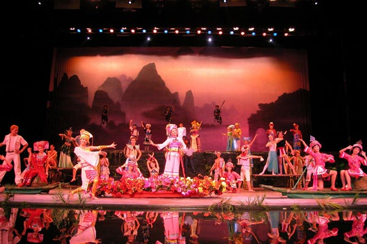
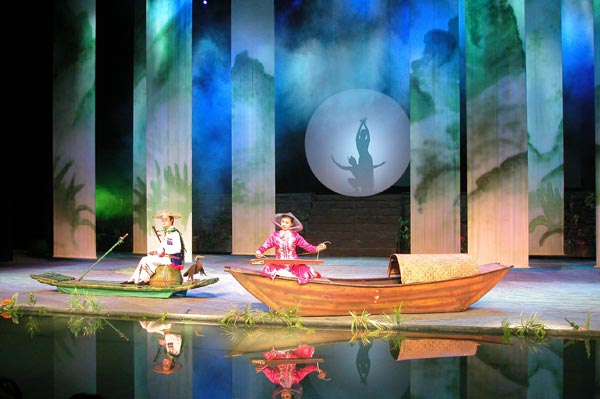
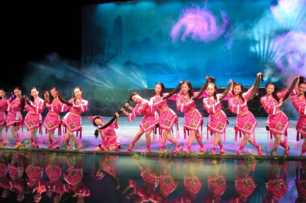
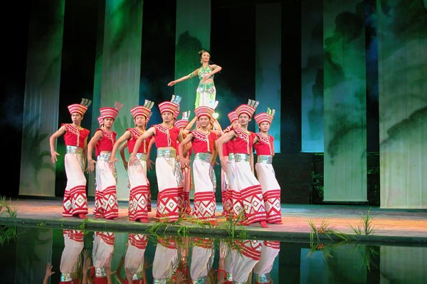
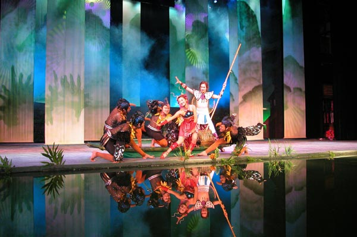
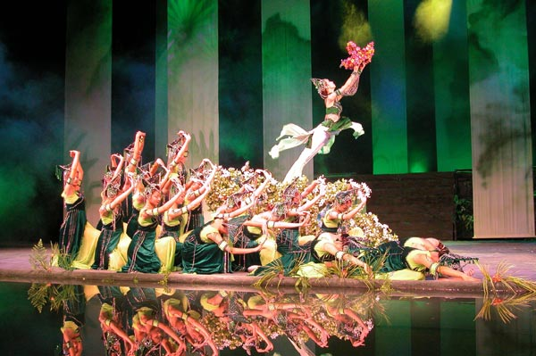

民族歌舞诗《漓江诗情》以其浓郁的民俗风情、缤纷的民族服饰、秀丽的桂林风景、欢乐的风情舞蹈而广受欢迎。在2001年第二届全国少数民族文艺调演中一举获得创作、演出、舞台美术三项金奖和12项单项奖。
想去桂林的人，只因为向往漓江；看了《漓江诗情》的人，才会真正佩服漓江。
漓江唯美，美在风情，美在人文，美在山水。这是大型民族歌舞诗《漓江诗情》将要传达给我们的大意象。
风情漓江：“喊妹”的率真、“红瑶舞”的华美以及“歌圩”的撩人心屝等，把独一无二的领略了，把风情看透了。
人文漓江：“渔歌”是沁人心田的清茶，“碑林”是铭刻思古之悠情的凿子，“西街”是演不完的音乐剧……凝炼携着烂漫，伴随漓江从眼前淙淙地趟过。
山水漓江：阔大的舞台，掬来了一泓清清的漓江水，漓江两岸的竹林、木桥、竹筏、木楼、浣衣石等，让人身临其境，拔动着诗情。

《漓江诗情》剧照欣赏

舞蹈《阳朔西街》

马骨胡与独弦琴《漓江月吟》

舞蹈《红瑶》

舞蹈《漓江诗情》

舞蹈《漓江渔歌》
舞蹈《美人漓江》